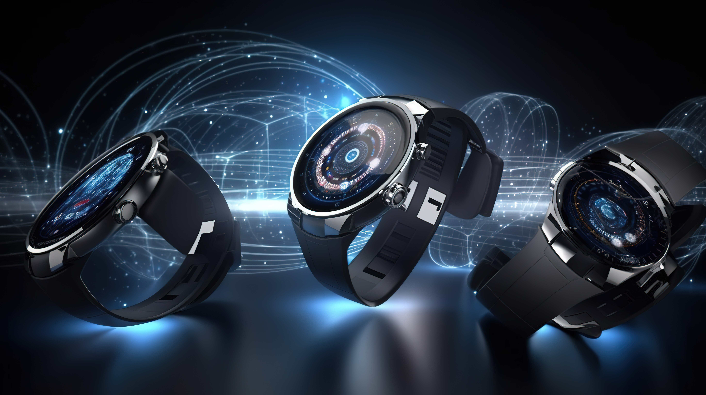

Impact of Technology on Watch Design
Jan 12, 2025

With the advancement of technology, the way the watches have been
designed has been revolutionized. With the change in aesthetics,
to advance materials that can be only manufactured using latest
technology to change in their functionality.
With the new technological advances modern watches whether
traditional or smart watches have been able to use material that
is more comfortable than before. Along with enhanced comfort, the
durability of the watches has increased drastically. Smartwatches
themselves are a design that differs greatly from traditional
watches. They follow design philosophy that focuses on making the
watches full of features then just a tool to tell time. It
integrates various features such as being able to connect to your
phone to sync data, being able to use apps, using GPS for
navigation, tracking your heartbeat, sleep quality, fitness
trackers, etc.
The emergence of 3D printing technology has revolutionized the
watch industry with its numerous advantages. One of the ways in
which this technology is revolutionizing the industry is through
the ability to create intricate designs with greater precision and
efficiency. This has enabled watchmakers to create unique designs
and prototypes, which can then be tested and refined before being
produced on a larger scale. Not only has 3D printing made it
easier for watchmakers to create unique timepieces, but it has
also enabled consumers to customize their watches in unprecedented
ways.